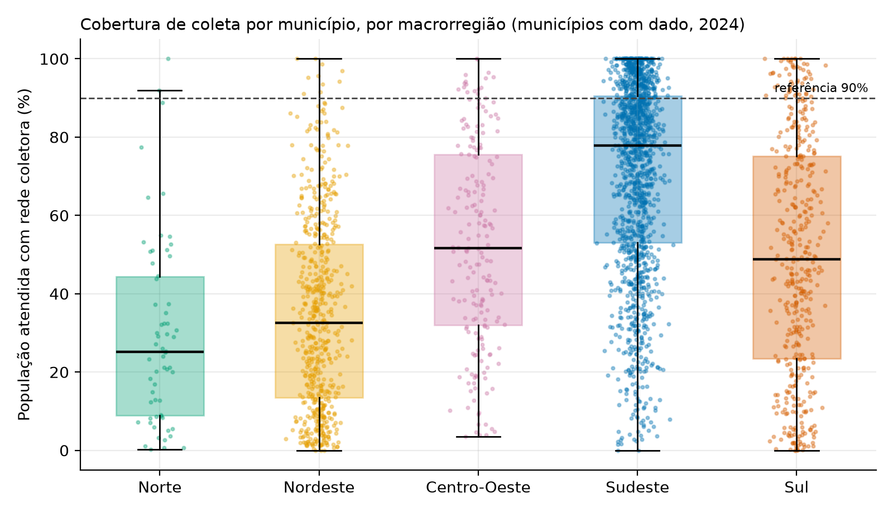
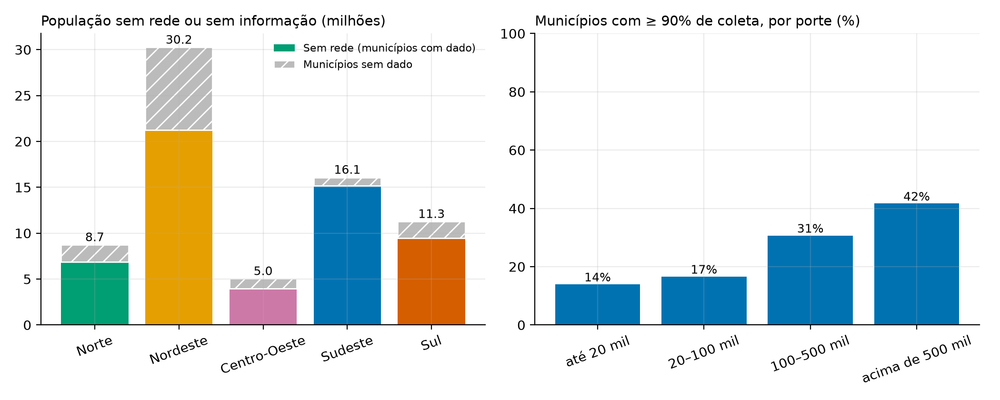
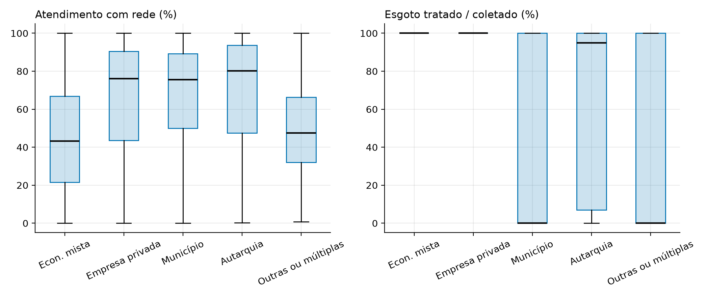
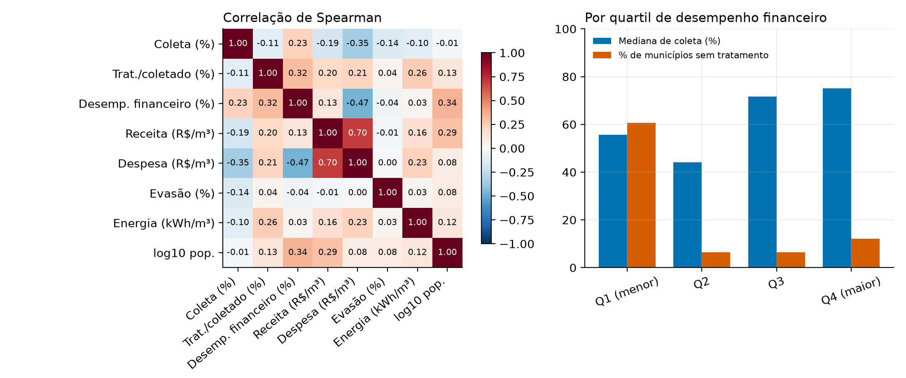

Resumo
O esgotamento sanitário concentra um dos maiores déficits do saneamento brasileiro, e o Marco Legal (Lei nº 14.026/2020) fixa a meta de atender 90% da população com coleta e tratamento até 2033. Este estudo analisa a base municipal do módulo Esgoto do SINISA (ano de referência 2024), que lista 3.903 municípios e 188,3 milhões de habitantes, dos quais 2.749 têm indicadores informados pelos prestadores. Um pipeline determinístico em Python (pandas) padroniza as planilhas originais, trata valores “não calculados”, preserva a rastreabilidade e reproduz o indicador oficial das 27 UFs com erro médio de 0,002 ponto percentual. Os resultados mostram que 62,3% da população tem rede coletora, com forte desigualdade regional (24,7% no Norte contra 81,9% no Sudeste), e que apenas 462 municípios com dado (16,9%) atingem 90% de coleta. A natureza jurídica do prestador associa-se a grandes diferenças de cobertura e, sobretudo, de tratamento (ε² = 0,13 e 0,31), e o desempenho financeiro correlaciona-se positivamente com o tratamento (ρ = 0,32), mas não de forma simples com a cobertura. A falta de dados, a baixa cobertura no Norte e no Nordeste e a lacuna de tratamento aparecem como frentes distintas de política pública. As associações são descritivas, não causais.
Palavras-chave: esgotamento sanitário; SINISA; desigualdade regional; engenharia de dados; ciência aberta.
Abstract
Sewage collection and treatment remain a major gap in Brazilian sanitation, and the national sanitation framework (Law 14,026/2020) sets a 90% target for collection and treatment by 2033. This study analyzes the municipal base of the SINISA Sewage module (reference year 2024), which lists 3,903 municipalities and 188.3 million inhabitants, 2,749 of which have indicators reported by service providers. A deterministic Python (pandas) pipeline standardizes the original spreadsheets, handles “not calculated” values, preserves traceability and reproduces the official indicator for all 27 states with a mean absolute error of 0.002 percentage points. Results show that 62.3% of the population is connected to a sewer network, with strong regional inequality (24.7% in the North versus 81.9% in the Southeast), and that only 462 municipalities with data (16.9%) reach 90% collection. Provider legal nature is associated with large differences in coverage and, above all, in treatment (ε² = 0.13 and 0.31), and financial performance correlates positively with treatment (ρ = 0.32) but not in a simple way with coverage. Missing data, low coverage in the North and Northeast, and the treatment gap emerge as distinct policy fronts. Associations are descriptive, not causal.
Keywords: sewage; SINISA; regional inequality; data engineering; open science.
1. Introdução
Coletar e tratar o esgoto evita a contaminação de rios, solo e água de consumo, e por isso o serviço é central para a saúde pública e para o meio ambiente. No Brasil, o Novo Marco Legal do Saneamento (BRASIL, 2020) estabeleceu como meta que 90% da população tenha coleta e tratamento de esgoto até 31 de dezembro de 2033. Acompanhar essa meta exige dados confiáveis, e desde 2024 a fonte oficial é o Sistema Nacional de Informações em Saneamento Básico (SINISA), instituído pelo art. 53 da Lei nº 11.445/2007 (BRASIL, 2007) e operado pelo Ministério das Cidades.
Os dados do SINISA são declarados pelos prestadores e consolidados por município, o que levanta três questões práticas: quanto da população está de fato atendida, quem é atendido por qual tipo de prestador e o que a situação financeira do serviço diz sobre sua capacidade de atender. Este trabalho responde a três perguntas de pesquisa:
Além dos resultados, o trabalho entrega um pipeline reprodutível e aberto (seção 5), de modo que qualquer pessoa possa refazer as análises a partir das planilhas originais.
2. Metodologia e pipeline de dados
2.1 Fonte e granularidade
Usamos o módulo Esgotamento Sanitário do SINISA, ano de referência 2024, publicado em 18/12/2025 (BRASIL, 2025a). Foram lidas três planilhas: Indicadores e Gestão Técnica de Esgoto, ambas da base municipal, e Indicadores UF/MR/BR, usada só para validação. Na base municipal, cada linha é um município e, quando há mais de um prestador, o próprio SINISA aplica regras de consolidação. A base técnica lista 3.903 municípios (188,3 milhões de habitantes); a de indicadores traz os 2.749 que têm dados de esgoto informados. Os outros 1.154 (14,6 milhões de habitantes) aparecem com população, mas sem informações do prestador.
2.2 Tratamento dos dados
As planilhas são arquivos .xlsx, então não há problema de codificação ou separador, mas o cabeçalho ocupa três linhas (nome, unidade e código da variável) e os valores ausentes vêm como texto, por exemplo “Não calculado (divisão por zero)”. O módulo src/etl.py faz o seguinte, sem nunca alterar os arquivos brutos:
- Cabeçalho: localiza a linha com
cod_IBGE, usa os códigos como nomes de coluna e guarda rótulos e unidades para gerar o dicionário de dados. - Tipos: converte indicadores para
float64; o código IBGE vira texto de 7 dígitos;Capitalvira booleano; a natureza jurídica é agrupada em cinco classes. - Ausentes: cada texto “Não calculado” vira
NaNe é contado por motivo no arquivoetl_log.json(16.562 valores em 42 indicadores). Nada é imputado. - Junção: a base técnica é o universo; os indicadores entram por
cod_IBGEcom validação 1:1 e a colunatem_dado_esgotosepara os 2.749 dos 1.154 municípios sem dado. - Valores extremos: nenhum percentual de atendimento ficou fora de 0 a 100; o esgoto tratado acima de 100% do coletado ocorre em 5 municípios e é apenas sinalizado. Os extremos financeiros (por exemplo, milhões de R$/m³) são mantidos e tratados com estatística robusta.
def read_sinisa(path, sheet=0): # trecho simplificado de src/etl.py
raw = pd.read_excel(path, sheet_name=sheet, header=None, dtype=object)
code_row = raw.index[raw[0].astype(str).str.strip() == "cod_IBGE"][0]
df = raw.iloc[code_row + 1:].copy()
df.columns = raw.iloc[code_row].astype(str).str.strip().tolist()
return df[pd.to_numeric(df["cod_IBGE"], errors="coerce").notna()]
def to_numeric_logged(df, cols, stats):
for c in cols:
num = pd.to_numeric(df[c], errors="coerce") # "Não calculado (...)" -> NaN
bad = df[c][num.isna() & df[c].notna()].astype(str)
for text, key in REASONS.items(): # conta o motivo de cada NaN
n = int(bad.str.contains(text, regex=False).sum())
if n: stats.setdefault("nao_calculado", {}).setdefault(c, {})[key] = n
df[c] = num.astype("float64")
return df2.3 Métricas derivadas
Seguindo a convenção do SINISA, a população atendida com rede é a soma das populações urbana e rural atendidas, e municípios sem dado entram no denominador como não atendidos. A cobertura efetiva de tratamento é uma estimativa: atendimento com rede multiplicado pela razão entre esgoto tratado e coletado, limitada a 100%. Também criamos a faixa de porte (até 20 mil, 20–100 mil, 100–500 mil e acima de 500 mil habitantes) e um indicador de municípios com pelo menos 90% de coleta.
df["pop_atendida_rede"] = (df["GTE0001"].fillna(0) + df["GTE0002"].fillna(0)).where(df["tem_dado_esgoto"])
df["pop_sem_rede"] = (df["DFE0001"] - df["pop_atendida_rede"]).clip(lower=0)
df["cobertura_efetiva_trat"] = df["IES0001"] * df["IES2004"].clip(upper=100) / 100
df["faixa_pop"] = pd.cut(df["DFE0001"], [0, 20_000, 100_000, 500_000, np.inf],
labels=["até 20 mil", "20–100 mil", "100–500 mil", "acima de 500 mil"])2.4 Estatística e validação
Como os indicadores são assimétricos e têm valores extremos, usamos medianas, médias ponderadas pela população, o teste de Kruskal-Wallis com tamanho de efeito ε² (VIRTANEN et al., 2020; KRUSKAL; WALLIS, 1952) e a correlação de Spearman. Para validar o ETL, recalculamos o atendimento por UF a partir da base municipal e comparamos com a planilha oficial: o resultado do Brasil coincide (62,3%) e o erro médio absoluto nas 27 UFs é de 0,002 ponto percentual. Quatro testes automatizados (pytest) verificam essa e outras propriedades.
| Verificação | Resultado |
|---|---|
| Linhas lidas (indicadores / base técnica) | 2.749 / 3.903 |
| Municípios sem dado de esgoto (população) | 1.154 (14,6 milhões) |
| Valores “não calculado” convertidos em NaN | 16.562 em 42 indicadores |
| Atendimento fora de 0–100% | 0 |
| Esgoto tratado acima de 100% do coletado (sinalizados) | 5 municípios |
| Divergência de cadastro entre as duas bases | 0 |
| Erro médio absoluto vs. indicador oficial (27 UFs) | 0,002 p.p. |
3. Resultados e discussão
No universo de 3.903 municípios, 117,3 milhões de pessoas (62,3%) têm rede coletora, e cerca de 71 milhões estão sem rede ou em municípios sem dado. Considerando só os 2.749 municípios com dado, o atendimento ponderado sobe para 67,5%, e a mediana municipal é 59,9%. A estimativa de coleta e tratamento para o país é de 52,0%, bem abaixo da meta de 90%. O indicador oficial de esgoto tratado sobre coletado no Brasil é 85,2% (BRASIL, 2025b), o que mostra que a cobertura de rede, e não só o tratamento do volume coletado, é o principal gargalo.
3.1 RQ1 · Desigualdade entre regiões, UFs e portes
A desigualdade regional é a característica mais marcante dos dados (Tabela 2). O Sudeste atende 81,9% da população e o Norte, 24,7%; o Nordeste, onde vivem 47 milhões de pessoas, chega a 35,9%. A diferença entre macrorregiões é estatisticamente muito forte e de tamanho relevante (Kruskal-Wallis, H = 689, p < 0,001, ε² = 0,25). No Sudeste, a coleta (81,9%) supera em 17,5 pontos a estimativa de coleta e tratamento (64,5%), o que indica que ali o problema se desloca da rede para o tratamento.
| Macrorregião | Municípios (com dado / total) | População (mi) | Rede coletora (%) | Coleta + trat. estimada (%) | Mediana municipal (%) | Municípios ≥ 90% (%) |
|---|---|---|---|---|---|---|
| Norte | 63 / 209 | 11,6 | 24,7 | 22,8 | 25,2 | 3,2 |
| Nordeste | 583 / 1.153 | 47,2 | 35,9 | 30,3 | 32,5 | 1,7 |
| Centro-Oeste | 193 / 348 | 15,9 | 68,3 | 65,3 | 51,6 | 8,3 |
| Sudeste | 1.461 / 1.482 | 87,0 | 81,9 | 64,5 | 77,9 | 26,4 |
| Sul | 449 / 711 | 26,6 | 57,7 | 54,5 | 48,8 | 11,7 |
| Brasil | 2.749 / 3.903 | 188,3 | 62,3 | 52,0 | 59,9 | 16,9 |

Entre as UFs, apenas São Paulo (93,3%) e o Distrito Federal (91,8%) superam 90%; Minas Gerais é a terceira (78,4%). No outro extremo estão Amapá (9,3%), Acre (11,0%) e Rondônia (13,3%). A Figura 2 permite explorar todas as UFs.
O porte também importa, mas de forma não linear (Tabela 3). A correlação de Spearman entre população (em log) e cobertura municipal é praticamente nula (ρ = −0,01), porque municípios de até 20 mil habitantes têm mediana (59,2%) ligeiramente acima dos de 20 a 100 mil (54,4%), enquanto os de mais de 100 mil têm medianas de 81% a 85%. A baixa cobertura total dos municípios pequenos (35,1%) vem, em grande parte, da falta de dados: 8,3 milhões dos 22,1 milhões de habitantes dessa faixa moram em municípios sem informação, e nas faixas acima de 100 mil quase não há municípios sem dado. Ou seja, a lacuna de informação se concentra justamente onde a cobertura é mais incerta.
| Faixa de população | Municípios (com dado / total) | População (mi) | Rede coletora (%) | Coleta + trat. estimada (%) | Pop. em municípios sem dado (mi) | Municípios ≥ 90% (%) |
|---|---|---|---|---|---|---|
| Até 20 mil | 1.533 / 2.505 | 22,1 | 35,1 | 22,6 | 8,3 | 14,0 |
| 20–100 mil | 902 / 1.079 | 44,7 | 46,2 | 34,6 | 5,6 | 16,6 |
| 100–500 mil | 266 / 271 | 55,8 | 67,8 | 56,7 | 0,7 | 30,7 |
| Acima de 500 mil | 48 / 48 | 65,7 | 77,8 | 69,7 | 0,0 | 41,7 |

3.2 RQ2 · Natureza jurídica do prestador
A natureza jurídica está fortemente associada à cobertura (Kruskal-Wallis, H = 367, ε² = 0,13) e, mais ainda, ao tratamento (H = 845, ε² = 0,31). Pela Tabela 4, as sociedades de economia mista, que atendem muitos municípios pequenos do Norte e do Nordeste, têm a menor cobertura mediana entre os grupos principais (43,2%), mas tratam o que coletam (mediana de 100%). Os serviços municipais de administração direta têm cobertura mediana alta (75,6%), porém mediana de tratamento igual a zero: entre os que têm o indicador calculado, 54% não tratam nada do que coletam. Empresas privadas combinam cobertura de 76,1%, tratamento de 100% e o menor número de extravasamentos por quilômetro de rede (0,22).
| Natureza jurídica | Municípios | População mediana | Rede coletora (%) | Tratado/coletado (%) | Extravasamentos por km |
|---|---|---|---|---|---|
| Sociedade de economia mista | 978 | 21.874 | 43,2 | 100,0 | 1,54 |
| Empresa privada | 597 | 18.836 | 76,1 | 100,0 | 0,22 |
| Município (adm. direta) | 587 | 7.452 | 75,6 | 0,0 | 0,91 |
| Autarquia | 316 | 35.142 | 80,1 | 95,0 | 1,81 |
| Outras ou múltiplas | 271 | 14.173 | 47,5 | 0,0 | 2,86 |

Essas diferenças não podem ser lidas como efeito do tipo de prestador, porque natureza jurídica, região e porte andam juntos. Ainda assim, a associação persiste quando olhamos só o Sudeste (H = 246, p < 0,001), e o mapa de calor da Figura 5 mostra como cada combinação se comporta dentro da mesma região.
3.3 RQ3 · Desempenho financeiro
O desempenho financeiro (receita operacional total dividida pela despesa total, em %) tem correlação positiva moderada com o tratamento (ρ = 0,32) e fraca com a cobertura (ρ = 0,23). A despesa por m³ tem correlação negativa com a cobertura (ρ = −0,35), padrão compatível com custos unitários maiores em sistemas pequenos, hipótese que este estudo não testa. A receita e a despesa por m³ andam juntas (ρ = 0,70), e a evasão de receita quase não se relaciona com as demais variáveis (Figura 6).

A relação com a cobertura não é monotônica (Tabela 5): o segundo quartil tem a menor cobertura mediana (44,1%), e o pior desempenho financeiro (Q1) concentra municípios sem tratamento (60,7%). Esse primeiro quartil é composto sobretudo por serviços municipais de administração direta (60%) e por prestadores múltiplos ou de outras naturezas (25%), com receita mediana de R$ 0,50 por m³ contra cerca de R$ 4 nos demais quartis. Isso sugere que o baixo “desempenho financeiro” desses casos reflete, em grande parte, serviços com pouca ou nenhuma cobrança, e não ineficiência de gestão. O achado conecta RQ3 e RQ2: a variável financeira funciona, em parte, como um marcador do tipo de prestador.
| Quartil | Municípios | Limite superior (%) | Mediana de coleta (%) | Municípios sem tratamento (%) |
|---|---|---|---|---|
| Q1 (menor) | 685 | 32,1 | 55,6 | 60,7 |
| Q2 | 685 | 88,4 | 44,1 | 6,5 |
| Q3 | 685 | 121,2 | 71,7 | 6,4 |
| Q4 (maior) | 685 | 1.942,4 | 75,2 | 12,2 |
4. Conclusão
Os dados do SINISA 2024 mostram três problemas distintos. O primeiro é de informação: 1.154 municípios, com 14,6 milhões de habitantes e concentrados nas faixas de menor porte, não têm dados de esgoto. O segundo é de cobertura: 62,3% da população tem rede, com um fosso entre o Sudeste (81,9%) e o Norte (24,7%), e só 16,9% dos municípios com dado alcançam 90%. O terceiro é de tratamento: a estimativa de coleta com tratamento é de 52,0%, e no Sudeste ela fica 17,5 pontos abaixo da coleta. A natureza jurídica e o desempenho financeiro estão associados a esses resultados, mas as duas variáveis se misturam com região, porte e política tarifária.
Limitações. (i) Os dados são autodeclarados e a ausência de resposta não é aleatória; (ii) o SINISA consolida municípios com vários prestadores, o que pode ocultar diferenças internas; (iii) a cobertura efetiva de tratamento é uma aproximação, já que o indicador de tratamento é medido em volume e não em pessoas; (iv) os extremos financeiros não foram corrigidos; (v) o estudo cobre um único ano e as associações são descritivas, não causais.
Trabalhos futuros. Incorporar as bases de estações de tratamento e de balanço patrimonial; comparar com séries históricas do SNIS; ajustar modelos multivariados com controles de região e porte; e construir mapas coropléticos com a malha municipal do IBGE.
5. Disponibilidade dos dados e declaração FAIR
O projeto segue os princípios FAIR (WILKINSON et al., 2016). Todo o código, os dados e este artigo estão no repositório público github.com/SEU-USUARIO/sinisa-esgoto-2024.
| Princípio | Como é atendido |
|---|---|
| Findable | README.md com resumo, palavras-chave e link para a fonte original; autoria, disciplina, instituição e semestre no cabeçalho. |
| Accessible | Repositório público e artigo no GitHub Pages; o pipeline roda sem credenciais e sem serviços pagos. |
| Interoperable | data/data_dictionary.md com todas as variáveis; dados tratados em Parquet e CSV comprimido (.csv.gz). |
| Reusable | Licença MIT (código) e CC-BY 4.0 (dados derivados e texto); requirements.txt com versões congeladas; testes e integração contínua. |
Para reproduzir tudo a partir dos arquivos brutos:
git clone https://github.com/SEU-USUARIO/sinisa-esgoto-2024.git
cd sinisa-esgoto-2024
python -m venv .venv && source .venv/bin/activate # Windows: .venv\Scripts\activate
pip install -r requirements.txt
python -m src.etl # gera data/processed/, o log e o dicionário de dados
pytest -q # valida o pipeline
python -m src.run_notebook # reexecuta a análise e regenera docs/assets/Os arquivos brutos em data/raw/ são cópias sem alteração das planilhas do Ministério das Cidades; o hash SHA-256 de cada um fica registrado em etl_log.json.
6. Referências
- BRASIL. Lei nº 11.445, de 5 de janeiro de 2007. Estabelece as diretrizes nacionais para o saneamento básico. Brasília, DF: Presidência da República, 2007. Disponível em: https://www.planalto.gov.br/ccivil_03/_ato2007-2010/2007/lei/l11445.htm.
- BRASIL. Lei nº 14.026, de 15 de julho de 2020. Atualiza o marco legal do saneamento básico. Diário Oficial da União, Brasília, DF, 16 jul. 2020. Disponível em: https://www.planalto.gov.br/ccivil_03/_ato2019-2022/2020/lei/l14026.htm.
- BRASIL. Ministério das Cidades. Sistema Nacional de Informações em Saneamento Básico (SINISA): módulo Esgotamento Sanitário, bases municipal e UF/MR/BR, ano de referência 2024. Brasília, DF, 2025a (publicação em 18 dez. 2025). Disponível em: https://www.gov.br/cidades/pt-br/acesso-a-informacao/acoes-e-programas/saneamento/sinisa.
- BRASIL. Ministério das Cidades. Indicadores de esgoto por UF, macrorregião e Brasil (SINISA 2024). Brasília, DF, 2025b. Planilha em
data/raw/. - BRASIL. Ministério das Cidades. Glossário de informações: esgotamento sanitário 2024. Brasília, DF, 2025c. Disponível em: https://www.gov.br/cidades/pt-br/acesso-a-informacao/acoes-e-programas/saneamento/sinisa/area-do-prestador/arquivos/GlossrioInformaes_ESGOTO_2024.pdf.
- HUNTER, J. D. Matplotlib: a 2D graphics environment. Computing in Science & Engineering, v. 9, n. 3, p. 90-95, 2007.
- KRUSKAL, W. H.; WALLIS, W. A. Use of ranks in one-criterion variance analysis. Journal of the American Statistical Association, v. 47, n. 260, p. 583-621, 1952.
- PANDAS DEVELOPMENT TEAM. pandas documentation. Disponível em: https://pandas.pydata.org/docs/.
- PLOTLY TECHNOLOGIES. Plotly Python Open Source Graphing Library. Disponível em: https://plotly.com/python/.
- SCIPY COMMUNITY. scipy.stats.kruskal e scipy.stats.spearmanr. Disponível em: https://docs.scipy.org/doc/scipy/reference/stats.html.
- VIRTANEN, P. et al. SciPy 1.0: fundamental algorithms for scientific computing in Python. Nature Methods, v. 17, p. 261-272, 2020.
- WILKINSON, M. D. et al. The FAIR Guiding Principles for scientific data management and stewardship. Scientific Data, v. 3, art. 160018, 2016. DOI: 10.1038/sdata.2016.18.